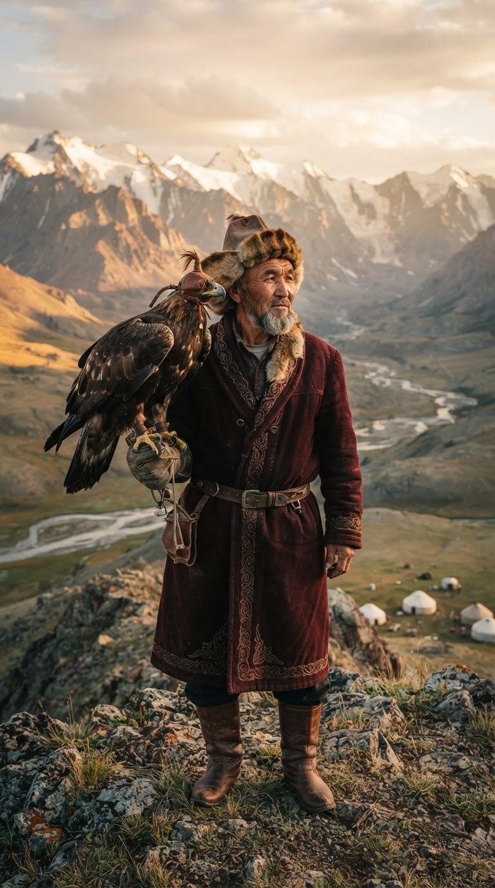

Central Asia
Eagle Hunters of Kyrgyzstan
Eight days chasing the life less ordinary across the Tian Shan.
- Duration
- 8 days
- Travellers
- Solo
- Flight
- ~5 hrs
Keystone experiences
- Eagle Hunter apprenticeship — Two days with a berkutchi family in Bokonbaevo. Ride out at dawn, fly the golden eagle, stay in their yurt.
- Kel-Suu by horseback — Remote turquoise lake reachable only on foot or horse. One night camping at 3,200m with a herder guide.
- Manas Epic storytelling — Private performance of the world's longest oral poem, told by a manaschi in his home village.
- Felt-making with nomad women — Craft a shyrdak in a mountain yurt camp. Leave with a piece you made yourself.
From
€3,800
per person · flights incl.